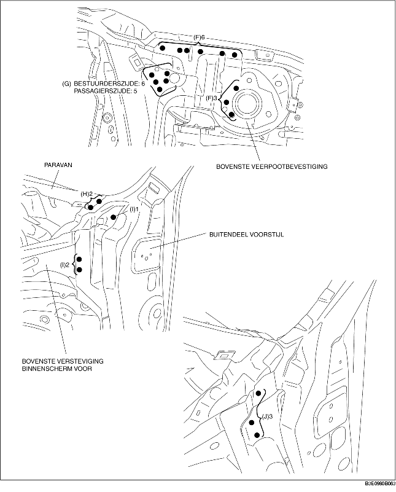

1. Boor 26 punten aangegeven met (A) uit.
2. Boor de 65 punten aangegeven met (B), de 4 punten aan bestuurderszijde aangegeven met (C) en de 3 punten aan passagierszijde uit.
3. Boor vanaf de onderzijde de 5 punten aangegeven met (D) uit.
4. Boor vanaf de onderzijde 1 punt aangegeven met (E) uit, omdat deze binnenin niet zichtbaar is.
5. Boor de 9 punten aangegeven met (F), de 6 punten aan bestuurderszijde aangegeven met (G) en de 5 punten aan passagierszijde uit.
6. Het verwijderen van de voorste langsdrager kan bemoeilijkt worden doordat de binnenste scharnierplaat en de bovenste versteviging binnenscherm in de weg zitten. Boor de 2 punten aangegeven met (H) en de 3 punten aangegeven met (I) uit en buig de buitenplaat van de voorstijl open.
7. Boor de 3 punten aangegeven met (J) uit en verwijder de voorste langsdrager.
